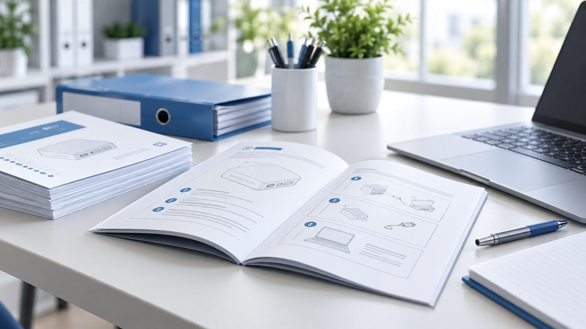

HDD / SSD
Systor 1:1 Dual-Port SATA
Copies and erases 2.5" SSD, 2.5" HDD and 3.5" disks at 5.4 GB/min. Code SYS101HS-DP.


Copies and erases 2.5" SSD, 2.5" HDD and 3.5" disks at 5.4 GB/min. Code SYS101HS-DP.

Three targets from one source at 5.4 GB/min, with verify and sanitize modes. Code SYS103HS-DP.

Seven SD or microSD cards at 6 GB/min, with compare and secure erase built in.

Three integrated workflows across consumer-grade devices and enterprise security needs.
 01
01Standalone duplication across USB, SD, NVMe, HDD/SSD, CF/CFast and optical media — no computer required.
Explore02Selected professional systems include multiple erase modes for controlled data sanitization workflows.
Explore03Compare, verify and test media alongside duplication with device quality tools.
ExploreChoose the media, scale and workflow. We'll narrow the catalog to the product family that fits your setup.

Compact Mini USB systems are a strong fit for smaller target counts and straightforward flash-drive duplication.
Dedicated ordering support for government and school customers, as well as professional buyers who need help selecting the right duplication system.
Product questions, compatibility checks and purchasing assistance — straight from the team.
Call sales866.444.1876 Email salessales@esystor.comDuplication hardware supplied to organizations across retail, technology, media and enterprise.

Quick-start guides and operating manuals for Systor systems across USB, storage and media workflows.
Open manualsSetup guidance, operating help and answers to common questions for Systor hardware.
Get supportWarranty coverage, ownership information and registration for supported Systor hardware.
View warrantyGet updates on new duplication systems, product releases and company news.